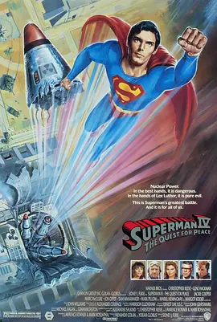

5.8
超人4：和平任务
Superman IV: The Quest for Peace
1987
美国
评分 5.8
导演:
西德尼·J·弗里尔
演员:
克里斯托弗·里夫 / 吉恩·哈克曼 / 杰基·库珀 / 马克·麦克卢尔 / 乔恩·克莱尔
类型:
冒险,动作,科幻
剧情简介
核武竞赛的阴影让世界局势愈发紧绷，新闻里的威胁不断放大民众的不安。就在各国陷入对峙之时，超人重新现身，他收集并处理全球核武器的行动迅速引起世界瞩目。人们在电视机前屏住呼吸，看着他将一枚枚导弹送往太阳，一度仿佛看见了和平的可能。然而，这份希望很快被阴谋撕开裂口。莱克斯从监狱中逃出，他敏锐地抓住科学技术背后的巨大破坏力，利用氪星物质秘密制造了一名拥有太阳能量的“核能人”。在烈日下，这个对手力量凶猛、意图明确，他的存在不仅挑战超人的极限，也为地球带来新的恐惧。随着核能人的出现，原本趋于平静的世界再次陷入混乱，城市上空不断回荡着震碎建筑的冲击声。超人与核能人的对战穿越云层、延展至外太空，光芒在轨道间闪烁，每一次碰撞都像要点燃天空。核能人步步紧逼，力量在日光照耀下几乎无可匹敌，超人在一次次被击退中逐渐体会到对方不仅是武力的象征，更是和平脆弱性的映照。为了阻止更大的灾难，他不得不冒着重伤的风险，以巧妙的方式反制敌人的优势。最终，城市重新归于宁静。尽管身影略显疲惫，超人依旧在高空巡视大地。他知道真正的和平无法靠一次壮举便永远达成，但守护它，是他始终不会放下的使命。